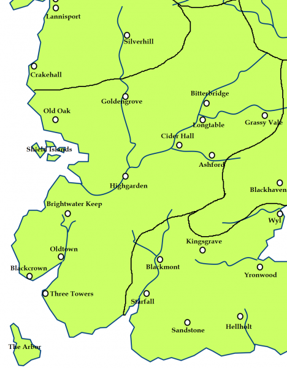

Shield Islands
The Shield Islands are composed of four islands: Greenshield, ruled by House Chester; Greyshield, ruled by House Grimm; Oakenshield, ruled by House Hewett; and Southshield, ruled by House Serry. The Shield Islands are located to the west of Highgarden and serves as a shield to the Mander river from the Iron Islands.
When any sign of longships is spotted, the elders in the watch towers will light the beacon fires, which in turn will cause other watch towers to light their own beacons and spread the warning to various villages and towns and castles further inland so that they will not be caught unaware by any attack.
Two thousand years before the events of A Song of Ice and Fire the ironborn were free to sail up the Mander and plunder all the villages and towns all the way to Bitterbridge, until the Gardener Kings in the Reach armed the fisher folk of the Shield Islands to protect not only themselves, but also the river, thus giving the islands their name.
Map on Next page.
